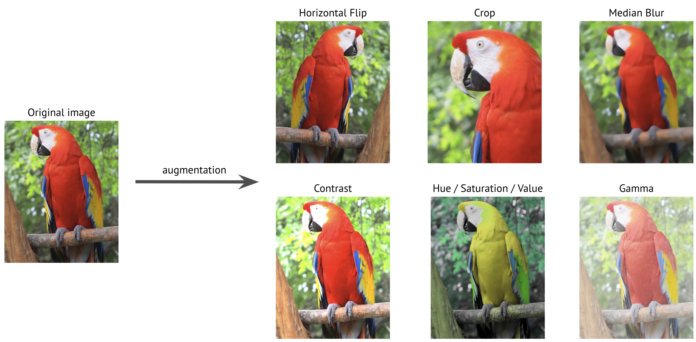

What is image augmentation and how it can improve the performance of deep neural networks¶
Deep neural networks require a lot of training data to obtain good results and prevent overfitting. However, it is often very difficult to get enough training samples. Multiple reasons could make it very hard or even impossible to gather enough data:
-
To make a training dataset, you need to obtain images and then label them. For example, you need to assign correct class labels if you have an image classification task. For an object detection task, you need to draw bounding boxes around objects. For a semantic segmentation task, you need to assign a correct class to each input image pixel. This process requires manual labor, and sometimes it could be very costly to label the training data. For example, to correctly label medical images, you need expensive domain experts.
-
Sometimes even collecting training images could be hard. There are many legal restrictions for working with healthcare data, and obtaining it requires a lot of effort. Sometimes getting the training images is more feasible, but it will cost a lot of money. For example, to get satellite images, you need to pay a satellite operator to take those photos. To get images for road scene recognition, you need an operator that will drive a car and collect the required data.
Image augmentation to the rescue¶
Image augmentation is a process of creating new training examples from the existing ones. To make a new sample, you slightly change the original image. For instance, you could make a new image a little brighter; you could cut a piece from the original image; you could make a new image by mirroring the original one, etc.
Here are some examples of transformations of the original image that will create a new training sample.

By applying those transformations to the original training dataset, you could create an almost infinite amount of new training samples.
How much does image augmentation improves the quality and performance of deep neural networks¶
Basic augmentations techniques were used almost in all papers that describe the state-of-the-art models for image recognition.
AlexNet was the first model that demonstrated exceptional capabilities of using deep neural networks for image recognition. For training, the authors used a set of basic image augmentation techniques. They resized original images to the fixed size of 256 by 256 pixels, and then they cropped patches of size 224 by 224 pixels as well as their horizontal reflections from those resized images. Also, they altered the intensities of the RGB channels in images.
Successive state-of-the-art models such as Inception, ResNet, and EfficientNet also used image augmentation techniques for training.
In 2018 Google published a paper about AutoAugment - an algorithm that automatically discovers the best set of augmentations for the dataset. They showed that a custom set of augmentations improves the performance of the model.
Here is a comparison between a model that used only the base set of augmentations and a model that used a specific set of augmentations discovered by AutoAugment. The table shows Top-1 accuracy (%) on the ImageNet validation set; higher is better.
| Model | Base augmentations | AutoAugment augmentations |
|---|---|---|
| ResNet-50 | 76.3 | 77.6 |
| ResNet-200 | 78.5 | 80.0 |
| AmoebaNet-B (6,190) | 82.2 | 82.8 |
| AmoebaNet-C (6,228) | 83.1 | 83.5 |
The table demonstrates that a diverse set of image augmentations improves the performance of neural networks compared to a base set with only a few most popular transformation techniques.
Augmentations help to fight overfitting and improve the performance of deep neural networks for computer vision tasks such as classification, segmentation, and object detection. The best part is that image augmentations libraries such as Albumentations make it possible to add image augmentations to any computer vision pipeline with minimal effort.